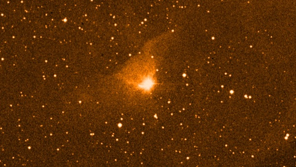

FU Orionis at Lake Sonoma, Feb. 22, 2003
We had a large, enthusiastic turnout Saturday night at Lake Sonoma (Grey Pine Flat lot) with good sky transparency and seeing along with very comfortable temperatures -- couldn't ask for more from a February evening. Among the attendees were Robert Leyland (17.5"), Matt Marcus (C8), and Jane Houston Jones. In total we had a collection of a half-dozen 16-inch or larger scopes.
This was the first time using my old Sky Designs mount since September 1999 (3 1/2 years), when Ray Cash lent me his scope/mount (using my mirror) while he was involved with CCD imaging. My new 18" Starmaster is arriving in March! In total, I logged 25 objects this night (3rd quarter moon).
One of the highlights of the evening for me was FU Orionis. FU is the prototype of a class of variables similar to young T Tauri stars, and they are generally found within bright or dark nebulae. In this case, FU is centered in a faint reflection nebula Cederblad 59, which is itself centered in a Barnard dark nebula, B35!
FU-type stars (or FUors) are a fundamental phase in the early lives of Sun-like stars. They are a rare, spectacular class (named after our prototype, FU Orionis) of young pre-main-sequence stars that undergo sudden, massive outbursts in brightness. They can flare by a factor of over 100 (5 magnitudes) in just a few months and remain luminous for decades. FU Orionis flared in late 1936, increasing by this amount, going from mag 15-16 to mag ~10 over the course of a few months and has faded only slightly since.
The intense bursts of energy and radiation (due to gravitational instabilities or interactions with a companion) of a FUor alter the chemical composition of the surrounding disk, essentially "cooking" the dust and gases from which new planets will form.
FU Ori Nebula = Ced 59
05 45 22.4 +09 04 11
Size 3' × 2'
I found a faint, cometary nebula surrounding reddish FU Orionis. It appears as a very low surface brightness halo, ~2' diameter, surrounding a 10.5-11 mag star. A wide pair of mag 10.5 stars ~13' SW provides a good reference to compare for scattered light around similar stars. It was evident that the glow around FU was real, although there was no structure. The star and nebula are situated within a large, mostly starless dark cloud B35, 48' east of the planetary nebula NGC 2022, and 3° northwest of Betelgeuse.
Barnard 35 (B35) appears as a large, 20'x10' darker region containing FU Orionis. It shows up best at low power (either 64× or 100×) as a large, slightly darker oval region, extended 2:1 E-W. The edge of the dark nebula is fairly sharply defined against the richer Milky Way background glow of the surrounding fields.
